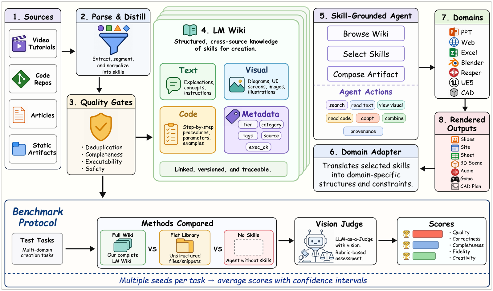

Paper
Paper
 Code
Code
 Dataset
Dataset
 Watch Video
Watch Video
Project Video
Watch the system in motion.
A short walkthrough of skill construction, selection, and execution across authoring domains.
How it works
One library, built once — browsed, selected, and run by the agent.
Resource2Skill distills tutorials, repositories, and reference artifacts into a hierarchical Skill Wiki. At run time an agent browses candidates, selects from text, visual, and code views, and executes the chosen skills through MCP into each domain's real software backend — the same construction operator is reused online when the offline pool falls short.

Results
Skills lift every domain.
Task scores on the 7-domain benchmark with a GPT-5.4 backbone — the same agent, with vs without the Resource2Skill library. Skills help everywhere, from +4.1 on Reaper to +38.2 on UE5, for a +15.0 average lift.
The Showcase
Same task. With skills vs without.
Large, synchronized comparisons across the released domains. Each row uses the same task and model; the only visible difference is whether the agent can browse and compose Resource2Skill skills.
Resource2Skill distills tutorials, code, documents, and reference artifacts into executable skill entries that agents can browse, select, compose, and run through real software tools.
Technical details & paper →